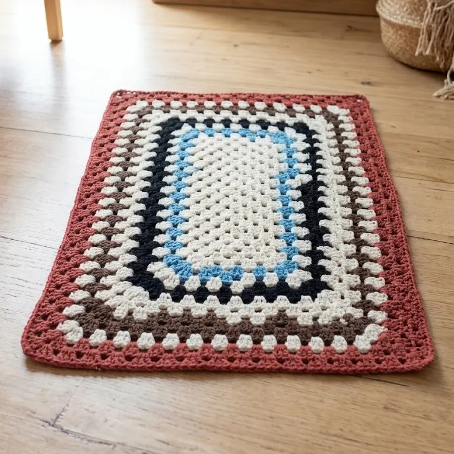

Feito à mão
Cada peça recebe atenção individual em todas as etapas.
Peças artesanais produzidas sob encomenda, com cuidado em cada detalhe. Escolha seus favoritos e finalize seu pedido pelo WhatsApp.

Algumas das peças mais pedidas. Todas podem ser feitas nas cores que você preferir.
Cada peça é produzida manualmente, respeitando o tempo do processo artesanal. Por isso, trabalhamos com encomendas em vez de estoque pronto.
Cores, tamanhos e detalhes podem ser combinados diretamente pelo WhatsApp antes da produção.
Cada peça recebe atenção individual em todas as etapas.
Escolha cores, tamanhos e detalhes conforme a possibilidade da peça.
Finalize sua encomenda pelo WhatsApp e combine todos os detalhes.
Navegue pelo catálogo e adicione as peças à sua encomenda. No carrinho, você pode anotar as cores e os detalhes de cada uma.
Com um clique, sua lista chega pronta no WhatsApp do ateliê, com as peças, os detalhes e o total estimado.
Vocês acertam cores, prazo, pagamento e entrega. Depois é só aguardar sua peça feita à mão.
Depende da peça, do tamanho e das encomendas em andamento. O prazo é informado pelo WhatsApp antes de a produção começar.
Sim. Cores, tamanhos e detalhes podem ser combinados conforme a possibilidade de cada peça. No carrinho, há um campo para anotar o que você deseja em cada uma.
Pix ou dinheiro.
Você pode retirar a peça ou receber com entrega na região. O local e as condições são combinados pelo WhatsApp.
Os preços são estimados e podem mudar conforme cores, tamanho e personalizações. O valor final é confirmado pelo WhatsApp antes de a produção começar.
Não. O site só monta a mensagem com a sua encomenda. Tudo é confirmado na conversa pelo WhatsApp.